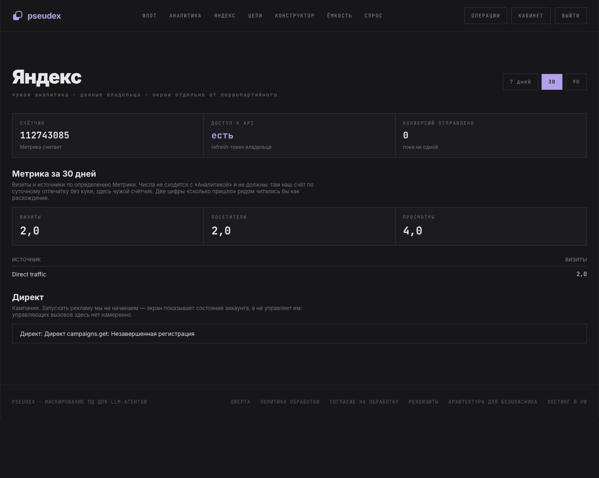

«Pseudex» — служебный модуль внутренней операторской панели компании, развёрнутой
на собственном сервере в Российской Федерации. Приложение не является продуктом для
третьих лиц и не предоставляет доступ к рекламным кампаниям кому-либо, кроме владельца
аккаунта pseudex-owner.
Задача модуля — собрать в одном месте расход и результаты рекламных кампаний рядом с бизнес-показателями собственного продукта, чтобы эффективность размещения оценивалась по деньгам (регистрации и оплаты), а не по кликам.
| Тип приложения | серверное, без публичного интерфейса для третьих лиц |
| Язык, протокол | Python 3.12, HTTP/JSON (API Директа версии 5) |
| Схема авторизации | OAuth 2.0, Authorization: Bearer |
| Application ID | e45729b0f35245ee9f0f5d2411f6d555 |
| Аккаунт | pseudex-owner — единственный, доступ только к нему |
Владелец аккаунта однократно выдаёт приложению доступ по OAuth. Обмен кода
авторизации на токены выполняется один раз; далее приложение получает
access_token из refresh_token автоматически.
Все обращения — POST https://api.direct.yandex.com/json/v5/<сервис>
с телом {"method": "…", "params": {…}}.
| Сервис | Метод | Назначение | Состояние |
|---|---|---|---|
campaigns | get |
список кампаний: идентификатор, название, состояние, бюджет | реализовано |
reports | get |
отчёт по расходу, показам, кликам и конверсиям | в разработке |
campaigns | update |
приостановка и возобновление собственных кампаний | планируется |
Получаются из Директа: идентификаторы и названия кампаний, их состояние, расход и статистика показов и кликов. Данные отображаются в закрытой операторской панели и раз в неделю включаются в служебную сводку, направляемую владельцу аккаунта.
Передаются в Директ: приостановка и возобновление кампаний по решению владельца (планируется). Иных сведений приложение в Директ не отправляет.
Отдельно от Директа приложение обращается к API Яндекс.Метрики
(api-metrika.yandex.net, счётчик 112743085) и передаёт туда
офлайн-конверсии — факт регистрации, активации ключа и оплаты. Это делается для оценки
эффективности рекламы по конечному результату. Передаётся только идентификатор клика
(yclid) и сумма оплаты; персональные данные клиентов в Метрику не уходят.
refresh_token хранится в защищённом файле окружения на сервере
приложения (права 600), доступ к серверу — только у владельца.access_token не сохраняется на диск: он выводится из
refresh_token и живёт в оперативной памяти процесса.
Экран доступен только после входа в панель; публичного адреса у него нет. Доступ к API отображается на экране явно, чтобы состояние подключения нельзя было перепутать с отсутствием данных.